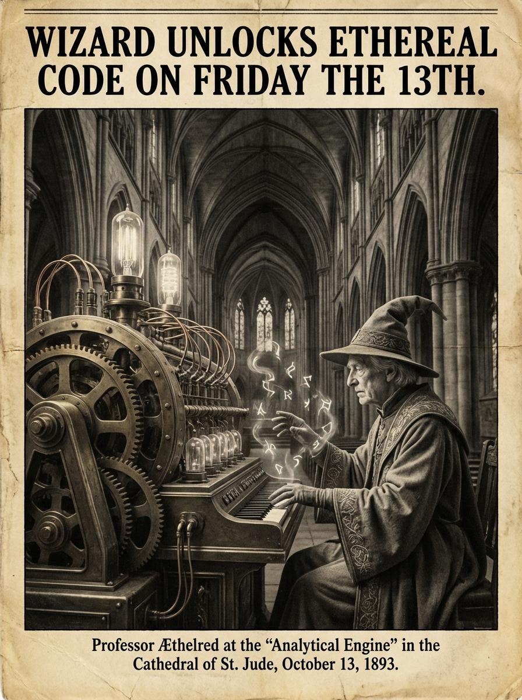

Morning Edition
6:00 AM CSTMarkets & Finance
S&P 500 PE Ratio Holds at 26.8
The S&P 500 PE ratio stands at 26.809 as of March 11, signaling continued market optimism despite global uncertainties. Microsoft trades at a PE of 25.25, improved by 23.69% from its 12-month average. The forward PE ratio sits at 21.84, suggesting analysts expect earnings growth ahead.
— Source: GuruFocus, FinanceCharts, MacroMicroIndustry PE Leaders & Laggards
Entertainment leads with the highest average PE at 47.92, followed by Trucking at 46.97. At the other end, Mortgage Finance sits at just 7.11. The dispersion suggests investors are betting heavily on growth sectors while remaining cautious on rate-sensitive industries.
— Source: FullRatioTech & AI
Friday's Dev Wisdom
The week culminates—Friday is for finishing strong. Deploy with confidence, review your PRs, and celebrate the wins. Friday the 13th brings no bad luck to those who code with intention. Your commits are solid, your tests are green, your documentation is... well, it exists. Ship it. The weekend awaits your well-earned rest.
— Source: Developer Horoscope Wisdom
The Code Necromancer: Friday the 13th — When the Spirits of Dead Code Rise.
"Friday the 13th is not a day of fear—it is a day of power. The superstitious see bad luck; the developer sees a date that parses correctly. Your code has no room for irrational fears. Debug the myths, refactor the legends, and ship the truth. The only curses that exist are the ones you write yourself: infinite loops, memory leaks, and uncommented regex. Break them. Today is just another day in the terminal—make it count."— Developer's Friday the 13th Wisdom
Sagittarius Horoscope
Friday the 13th crackles with electricity for you, Archer. The cosmos whispers that luck is merely preparation meeting opportunity—and you've been preparing brilliantly. A surprise revelation may shift your perspective on a long-held project. Trust your instincts today; your natural optimism is your superpower, not naivety. An unexpected message could contain exactly the breakthrough you've been seeking. The weekend approaches with promise—what chapter will you close before it arrives?
— Cosmic tip: Lucky energy, unexpected breakthroughs, trusted instincts, Mar 13, 2026World & US News
-
Iran's New Supreme Leader Defiant:
Iran's new supreme leader declared the Strait of Hormuz will remain closed as the conflict enters its third week. Israel's Netanyahu issued a veiled threat to Khamenei. Six tankers have been attacked in the Gulf as regional tensions escalate.
-
Explosions Rock Dubai:
Iran has stepped up attacks in the Gulf, with explosions reported in Dubai. India co-sponsored a UNSC resolution condemning Iran's attacks on GCC nations and Jordan. The humanitarian crisis continues to deepen across the region.
-
Global Trade Warning:
The WTO projects global trade will slow sharply in 2026, with North America facing the steepest drop in exports. Supply chain realignments continue as tariffs reshape international commerce.
-
Oil Tanker Reaches Mumbai:
A Liberia-flagged oil tanker carrying one million barrels of crude successfully crossed the Strait of Hormuz and docked in Mumbai, marking a rare successful passage through the contested waterway.
Active Reminders
- Build Oomi iOS and Android app
- Plaid Integration Research
- Connect Nemu to Notion
- Research VPN/proxy services
- Create security OpenClaw bot